從現實旅程走向奇幻，櫥窗成為空間敘事的第一個轉折。
From real journeys to imagined ones, the window became the first turn in the narrative.
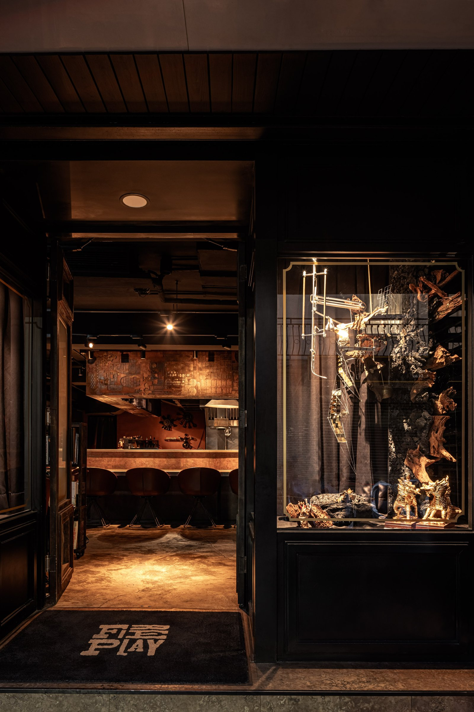
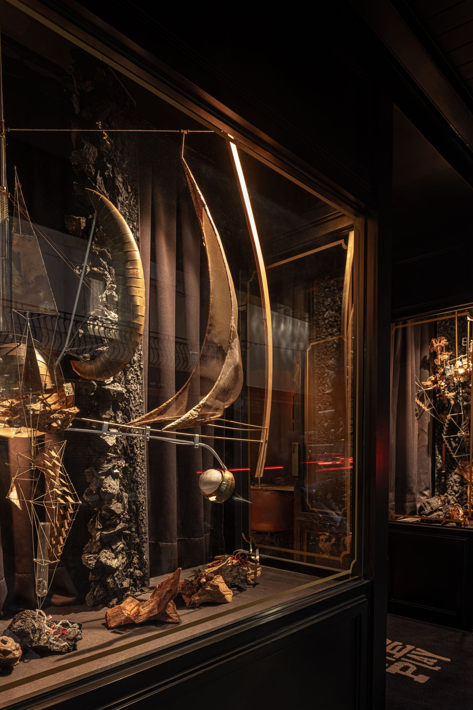
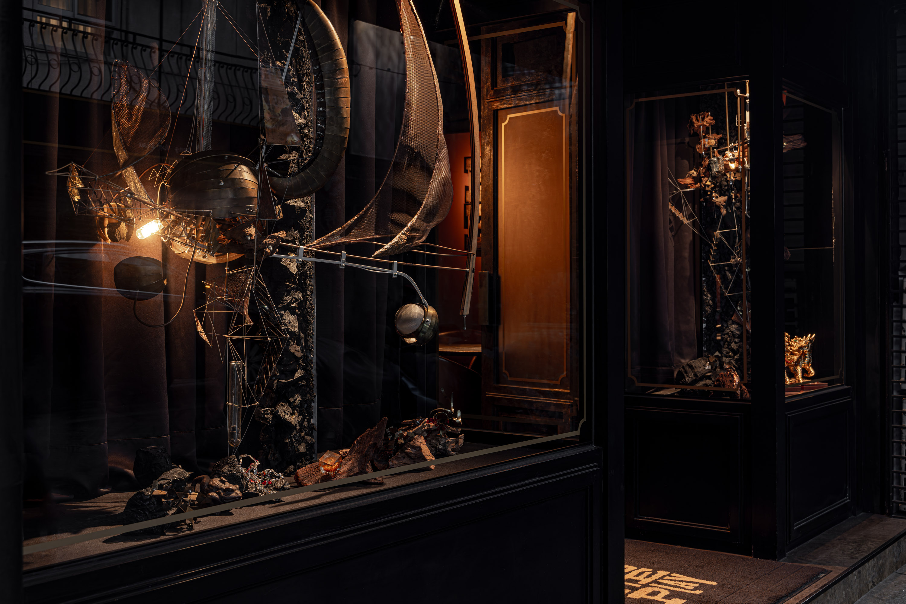
01
Fire Play 的第二次改裝，發生在疫情把邊界關起來的那幾年。第一次開幕時，用「旅行」做為主題。當世界忽然按下暫停鍵，我們決定把視線從地表拉到宇宙——太空梭、行星與片段的機械構造，組合成一個帶有科幻感的場景，回應那段「不知道未來在哪裡」的時間感。
Fire Play's second renovation happened during the years the pandemic sealed the borders. The first opening used travel as its theme. When the world hit pause, we pulled the gaze upward — a spacecraft, planets, fragments of mechanical structure assembled into a scene with science-fiction quality, responding to that period of not knowing where the future was.
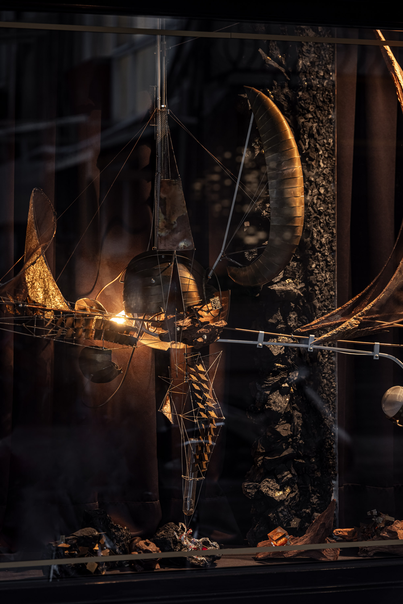
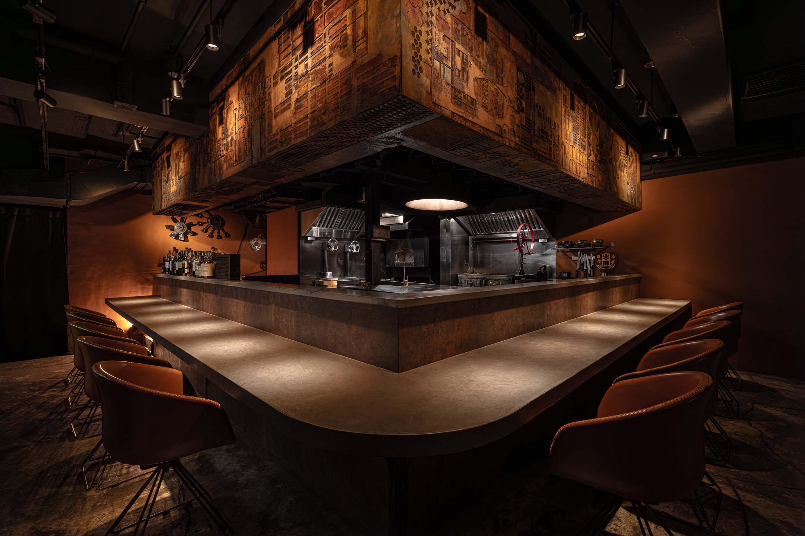
02
重新調整軌道燈與色溫後，吧台與爐火保持明確焦點，其餘區域則壓低亮度，塑造接近電影光的對比。這樣的配置，讓餐盤色彩更被看見，也讓客人坐在吧台前時，能被安穩地包在陰影與光之間。
After recalibrating track lights and color temperature, the bar and open flame hold a clear focus; the rest dims, creating contrast close to cinematic light. This lets the colors on each plate stand out, wrapping guests at the bar in a steady boundary between shadow and light.
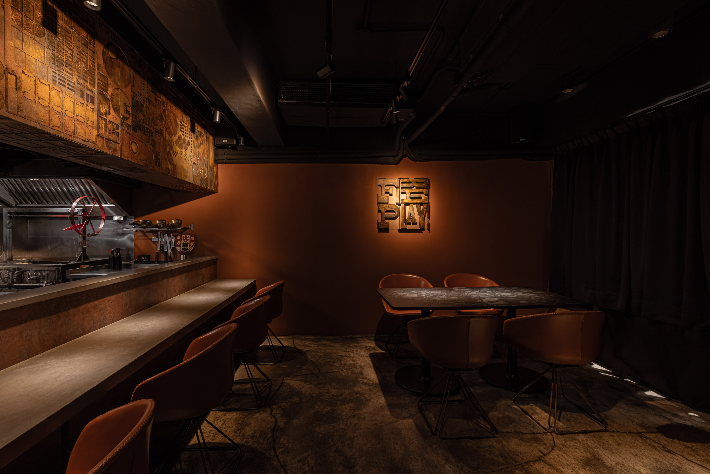
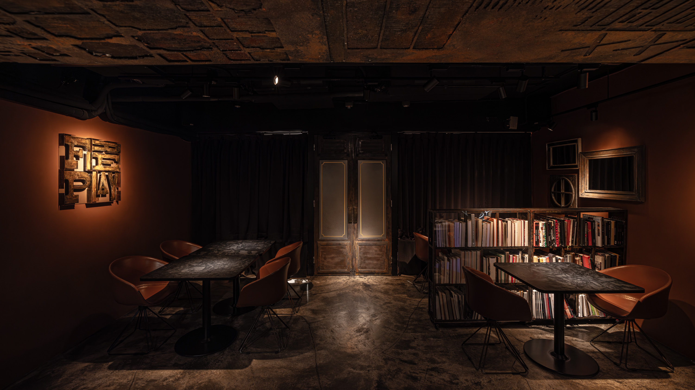
03
吧台檯面在原有人造石上疊加金屬漆處理。這層金屬感不是亮晶晶的「新」，而是刻意拉出時間感的痕跡，讓整個吧台從平滑的表面，轉為具有厚度的載體，呼應 Fire Play 對「玩火」與「熟成」的堅持。
A metallic paint finish layered over the existing engineered stone. The metallic quality is not the brightness of new — it deliberately pulls out traces of time, turning the bar from a smooth surface into a carrier with depth, echoing Fire Play's commitment to fire and maturation.
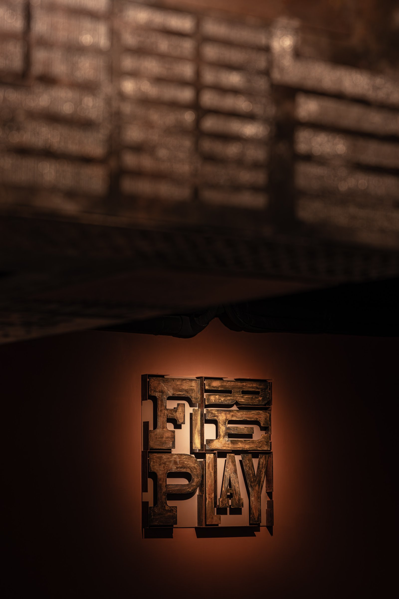
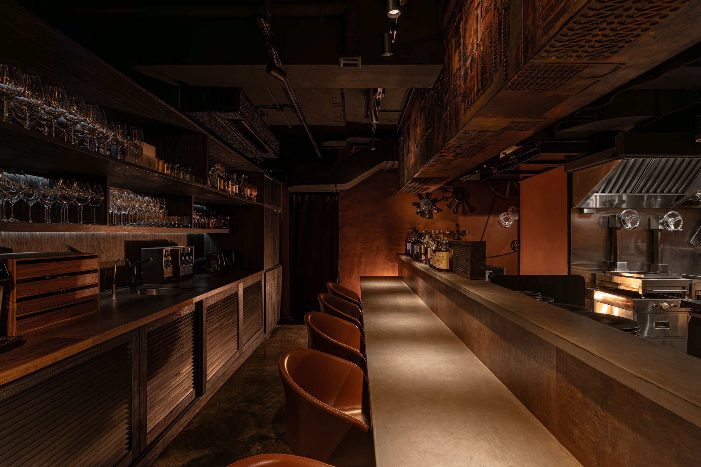
04
天花與牆面間加入的鐵件結構，像一組壓印在空間裡的標記。這些透空的金屬肢體，在視線高度形成節奏，把吧台區與座位區緊扣在一起。空間改變了，但語法還是同一個。
Steel elements between ceiling and wall act as stamps pressed into the space. These open metal forms create rhythm at eye level, visually locking the bar and seating areas together. The space changed, but the grammar stayed the same.
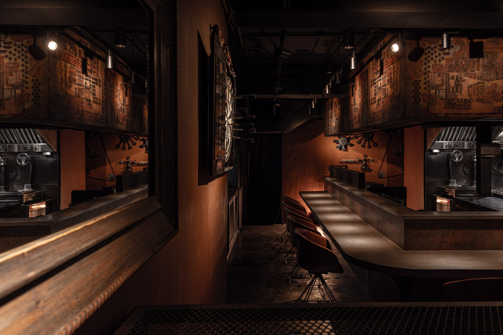
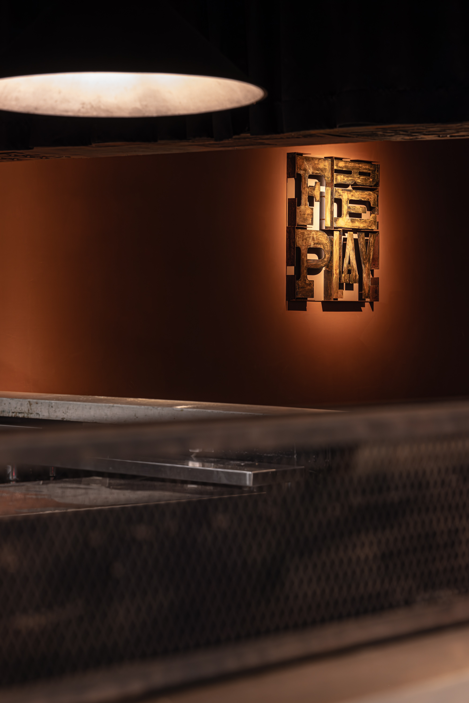
05
兩次改裝，同一個品牌，不同的故事。第一次是地面上的旅行，第二次是太空的想像。但空間的底層邏輯沒有改變——吧台永遠是核心，火永遠是焦點，客人永遠坐在最好的位置看廚師工作。故事換了，骨架沒有換。
Two renovations, one brand, different stories. The first was earthbound travel; the second, space. But the underlying spatial logic never changed — the bar is always the core, fire always the focus, guests always seated at the best vantage to watch the chef. The story changed; the skeleton did not.
All Photos